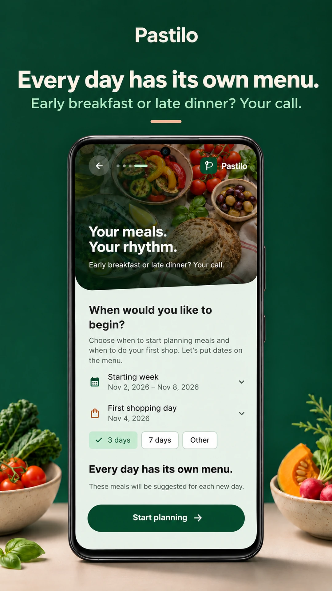
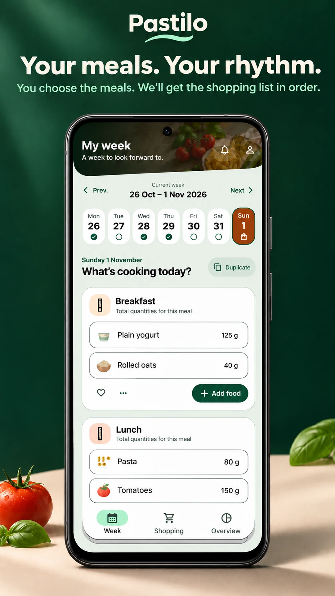
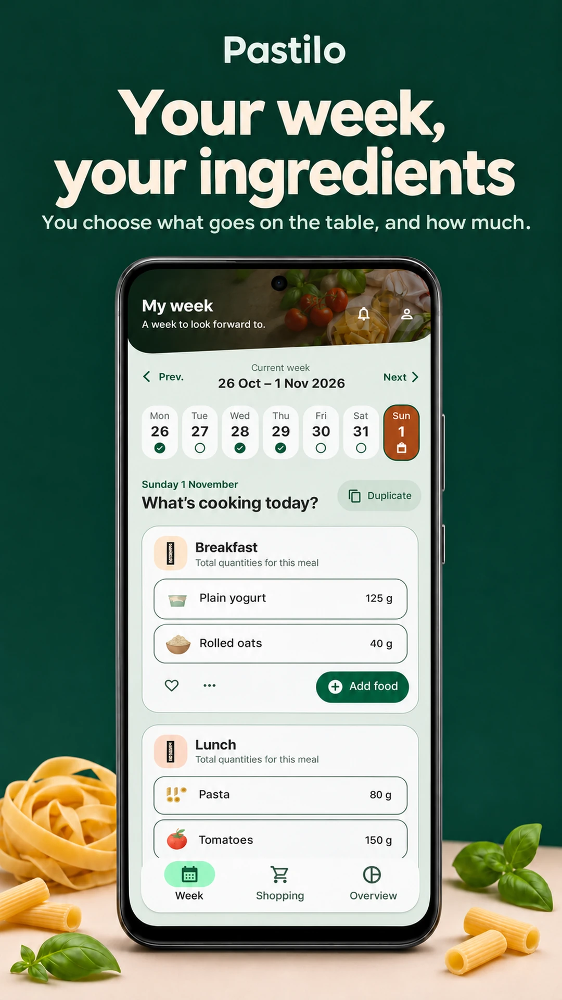
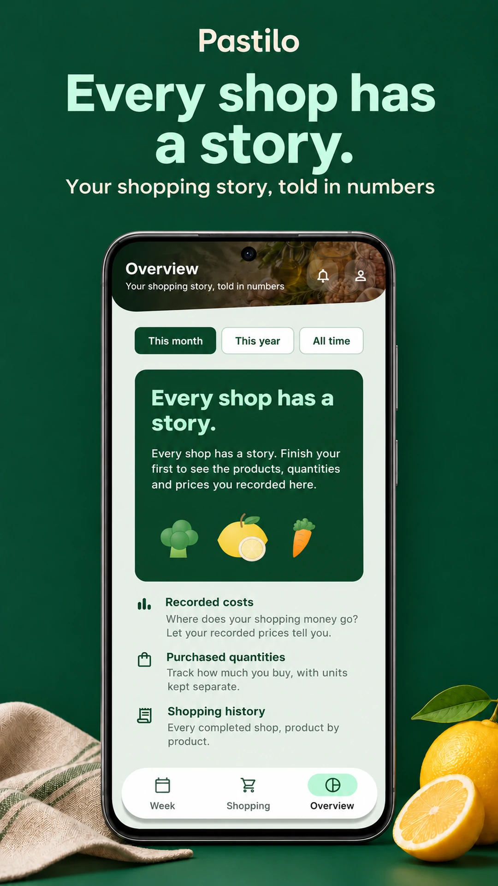
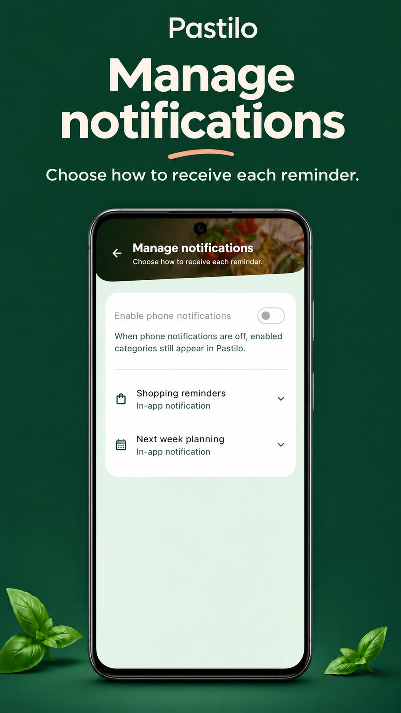

Every day has its own menu.
Choose your starting week, first shopping day and the interval that works for you.
Decide what to put on the table. Pastilo brings together your weekly meals, the ingredients to buy and the purchases you want to remember.

From the first idea to your shopping cart: explore Pastilo’s features.
Promotional illustrations based on the English app, with sample content.

Choose your starting week, first shopping day and the interval that works for you.

Add foods and quantities to your meals. Reuse the days you prefer and review changes before confirming.

Bring together the ingredients for your chosen period. Mark what you already have or start with a free shopping list.

Prepare products, start shopping and resume after closing the app. Record prices only if you want to.

Revisit completed shopping and recorded prices by period and category. No estimates for missing prices.

Choose how to receive shopping and next-week reminders. Alerts stay on your device.

Recognise foods with Pastilo icons. Add the products you need for your everyday life too.
Meals, favourites and shopping stay on your device, without a Pastilo account or synchronisation to our servers. No automatic diets: you choose what to organise.